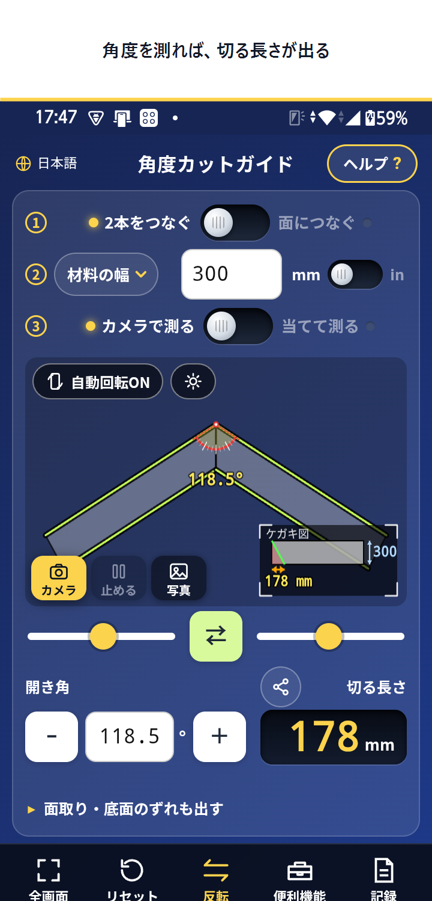
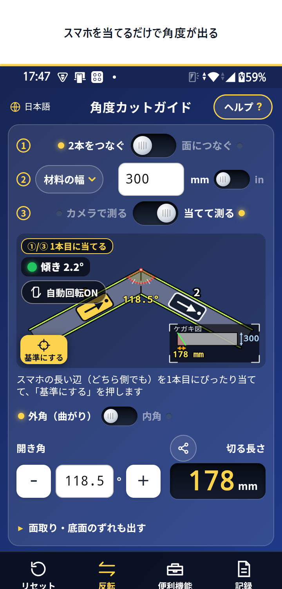
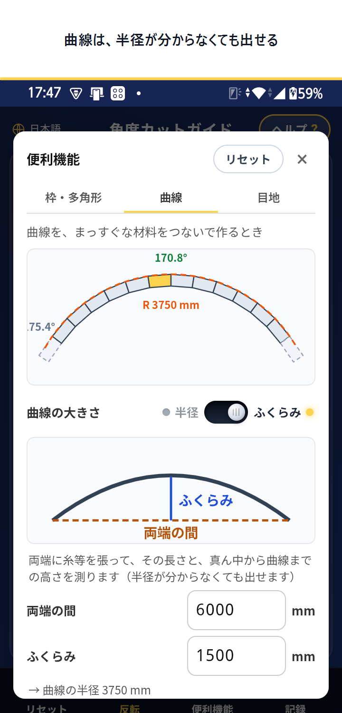
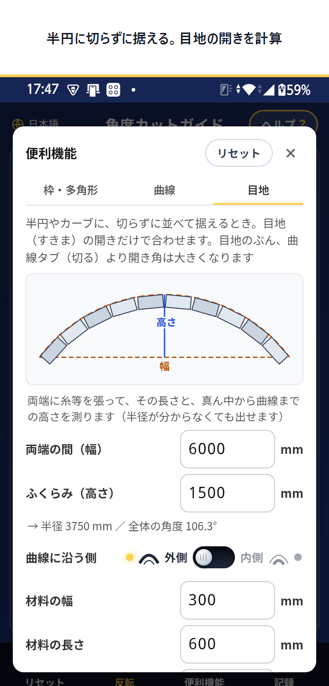
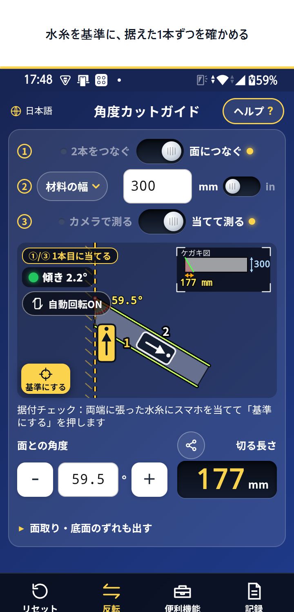

2026.09.19 作成。ここに載っているものは、まだ Play Console に入れていません。ここで直してから入れます。
720×1498。広告とナビゲーションバーは切り落とし、上に帯（白地＋黒文字＋黄ライン）を付けています。帯の文言を直したい場合は言ってください。





角度カットガイド｜側溝カット・斜め切りの寸法計算
Angle Cut Guide – Miter Calc
側溝カット・縁石・ブロック・木材の斜め切りに。カメラで角度を合わせて、切る長さとケガキ補正値を計算。6言語対応
側溝カット・縁石・ブロック・木材の斜め切りに。カメラで角度を合わせて切る長さを計算。スマホを当てて測ることも（Pro）
Measure the angle by camera or by holding the phone, and get the cut length.
側溝カット・ブロックの斜め切りに。 切る角度を測って、切る長さを出すアプリです。 U字溝・縁石・平板・タイル・木材など、角度をつけて切るもの（斜めカット・角度カット）に使えます。 ■ 測り方は2つ ・カメラ：材料を写して、線を縁に合わせる ・当てて測る（Pro）：スマホを材料に当てるだけ。方位磁石を使わないので、鉄筋や鋼材のそばでも狂いません ・両方で測って、差を見比べることもできます ■ 使い方（上から順に） ① 切り方をえらぶ（2本をつなぐ／面につなぐ） ② 材料の幅を入れる（mm・インチ） ③ 測り方をえらんで、角度を測る ④ 切る長さが算出される ■ 便利機能 ・枠・多角形：4角・6角・8角などの留めの角度と、定尺からの材料取り ・曲線：まっすぐな材料をつないで曲線を作るときの、つなぎ目の開き角と切る長さ。半径が分からなくても、両端の間とふくらみ（高さ）から出せます ・目地：半円やカーブに切らずに据えるときの、目地（すきま）の開き（外側・内側）と、据える本数 ・据付チェック（Pro）：両端に張った水糸を基準に、据えた材料の角度を1本ずつ確かめる ■ できること ・底面や面取りのぶんのズレ（ケガキ補正値）を、自動で計算 ・全画面・2本指で拡大・線を動かす間の拡大鏡で、細かく合わせられる ・スマホの傾きを表示。画面を止めて、ゆっくり合わせられる ・日なたでも見やすく（明るさの調整＝対応端末、くっきり・白黒の表示） ・よく使う材料を登録して、すぐ呼び出せる ・結果を、図つきの画像にして送る・保存できる ・測った値はメモをつけて保存。表（CSV）やバックアップに書き出せる ・撮った写真からでも測れる ・画面の向きを固定できる（自動回転ON／OFF） ■ 現場向け ・電波が届かなくても使えます ・6言語（日本語・英語・ベトナム語・中国語・ポルトガル語・フィリピン語） ■ Pro について 広告が表示されなくなり、「当てて測る」と「据付チェック」が使えるようになる買い切りです。 はじめは無料でお試しいただけます（1日3回・5日間）。 ■ 注意 ・ケガキは数mm〜1cm 余裕を見て、切ったあと目地で調整してください ・角度には誤差が出ます（カメラの写り方、スマホの傾き、時間によるずれなど）。大事なところは実測と合わせてください
For cutting gutters, curbs, blocks and timber at an angle. Measure the cut angle and read the cut length. ■ Two ways to measure ・Camera: shoot the material and line up the guide ・Hold to measure (Pro): just hold the phone against the material. It does not use a compass, so rebar and steel do not affect it ・You can measure both ways and compare the difference ■ How to use ① Choose the cut (join two pieces / join to a surface) ② Enter the material width (mm or inches) ③ Choose how to measure, and measure the angle ④ The cut length is calculated ■ Tools ・Frames & polygons: miter angles for 4, 6, 8 sides and cutting from stock ・Curves: the opening angle and cut length when joining straight pieces along a curve. No radius needed — enter the span and the bulge ・Joints: the joint gaps (outer and inner) and how many pieces fit when setting along a curve without cutting ・Setting check (Pro): verify each piece against the string, one by one ■ Also ・Automatic offset for chamfers and a narrower bottom face ・Full screen, pinch zoom and a magnifier while you drag the line ・Tilt readout, freeze the screen to line things up slowly ・Readable in sunlight (brightness control on supported devices, high contrast and mono) ・Save the materials you use often ・Share or save the result as an image with the drawing ・Save measurements with a note; export to CSV or a backup ・Measure from a photo you already took ・Lock the screen orientation ■ On site ・Works even where there is no signal ・6 languages (Japanese, English, Vietnamese, Chinese, Portuguese, Filipino) ■ About Pro A one-time purchase that removes the ads and unlocks “Hold to measure” and the setting check. You can try it free at first (3 times a day for 5 days). ■ Please note ・Leave a few mm of margin when marking, and adjust with the joints after cutting ・Angles have some error (how the camera sees it, the phone tilt, drift over time). Confirm anything critical on the material itself
・スマホを材料に当てて角度を測れるようになりました（Pro） ・水糸を基準に、据えた材料の角度を1本ずつ確かめられる「据付チェック」を追加しました（Pro） ・曲線や半円に据えるときの「目地の開き」を計算できるようになりました ・枠・多角形／曲線の入力を分かりやすくし、1画面で操作できるよう画面を整えました
・Hold your phone against the material to read the angle (Pro) ・New setting check: verify each piece against the string, one by one (Pro) ・Calculate the joint gaps for setting along a curve or half circle ・Simpler inputs for frames/polygons and curves, and a layout that fits one screen
| 項目 | 日本語 | English |
|---|---|---|
| 名前 | Pro（広告なし＋当てて測る） | Pro (no ads + hold to measure) |
| 説明 | 広告が表示されなくなり、スマホを材料に当てて角度を測る機能と、据付チェックが使えるようになります。買い切りです。 | Removes the ads and unlocks “Hold to measure” and the setting check. One-time purchase. |
商品IDは remove_ads のまま（変更できません）。既存の購入者はそのまま Pro になります。
アプリ版だけの機能（広告・購入・画面の向きの固定・端末のジャイロ）は Web版では動きません。当てて測るは、ブラウザの向きセンサーで動く端末なら動きます。